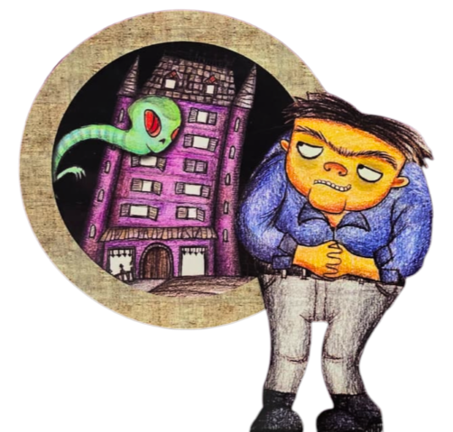

O Caso do Condomínio dos Monstros
Como Jogar
1. Explore: Visite os locais do condomínio usando o menu à esquerda.
2. Investigue: Leia os diálogos com atenção. Algumas frases são pistas! Clique nelas para adicioná-las ao seu Caderno de Anotações.
3. Deduza: Quando tiver todas as pistas, o botão "Resolver o Caso!" ficará ativo.
4. Acuse: Monte sua teoria e acuse o monstro que você acredita ser o culpado. Boa sorte!
A Teoria do Porteiro
Construa sua teoria arrastando as pistas corretas para os quadros. Depois, acuse o culpado.
Pistas Coletadas
Quadro da Investigação
Oportunidade:
Qual pista mostra que o suspeito podia cometer o crime?
Motivação:
Qual pista explica POR QUE o suspeito cometeria o crime?
Prova Concreta:
Qual é a evidência mais forte contra o suspeito?